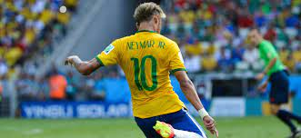

JOGADOR DE FUTEBOL
login
sair

Esses jogadores atualmente são os melhores jogadores do mundo.
primeiro jogador da imagem eo Neymar da Silva Santos Júnior (Mogi das Cruzes, 5 de fevereiro de 1992) é um futebolista brasileiro que atua como atacante. Atualmente joga pelo Al-Hilal e pela Seleção Brasileira. É considerado o principal futebolista brasileiro da atualidade e um dos melhores futebolistas do mundo.
sugundo jogador é Lionel Andrés Messi Cuccittini (Rosário, 24 de junho de 1987) é um futebolista argentino que atua como atacante. Atualmente joga pelo Inter Miami e pela Seleção Argentina, onde, atuando como capitão, venceu a Copa do Mundo do Catar de 2022. Ele possui um recorde de sete premiações da Bolas de Ouro pela France Football e sete pela FIFA,[9] um recorde de seis Chuteiras de Ouro, em 2020, foi escalado no Dream Team da Bola de Ouro e com 44 títulos conquistados, é o jogador com mais títulos oficiais na história do futebol.
terceiro jogador é Vinícius José Paixão de Oliveira Júnior (São Gonçalo, 12 de julho de 2000) é um futebolista brasileiro que atua como atacante. Atualmente joga pelo Real Madrid e pela Seleção Brasileira.
quarto jogador mais conhecido como Achraf Hakimi Mouh (em árabe: أشرف حكيمي) (Madrid, 4 de novembro de 1998) é um futebolista marroquino que atua como lateral-direito. Atualmente, joga pelo Paris Saint-Germain.
para saber mais sobre o mundo do futebol acesse o botão logim la em cima para vc esta sempre ligado no mundo do futebol..
.jpeg)
.jpeg)
.jpeg)